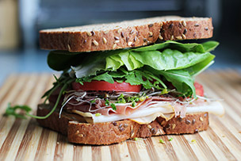

How to Make the Best Sandwhich Ever

Seriously Folks, how good does this look!
This is the best hand crafted sandwhich you will ever have! This turkey, prosciutto and provolone sandwhich will make your mouth water, I will now teach you how to make it.
A Step by Step Tutorial
- Get some whole grain bread. Healthy and delicious.
- Go to the nearest deli and have some turkey and prosciutto sliced as thin as the deli guy can slice it.
- Ask the butcher for some provolone - they usually carry the freshest cheese at the deli.
- Pick up bean spouts, lettuce and tomatoes. Buy Them.
- Bring all the things you purchased home and lets get stacking!
- Pile a heavy amount of each ingredient between two slices of the whole wheat bread. Then close.
- Cut in half.
- Enjoy.
Source: How to Make the Best Sandwhich Ever!